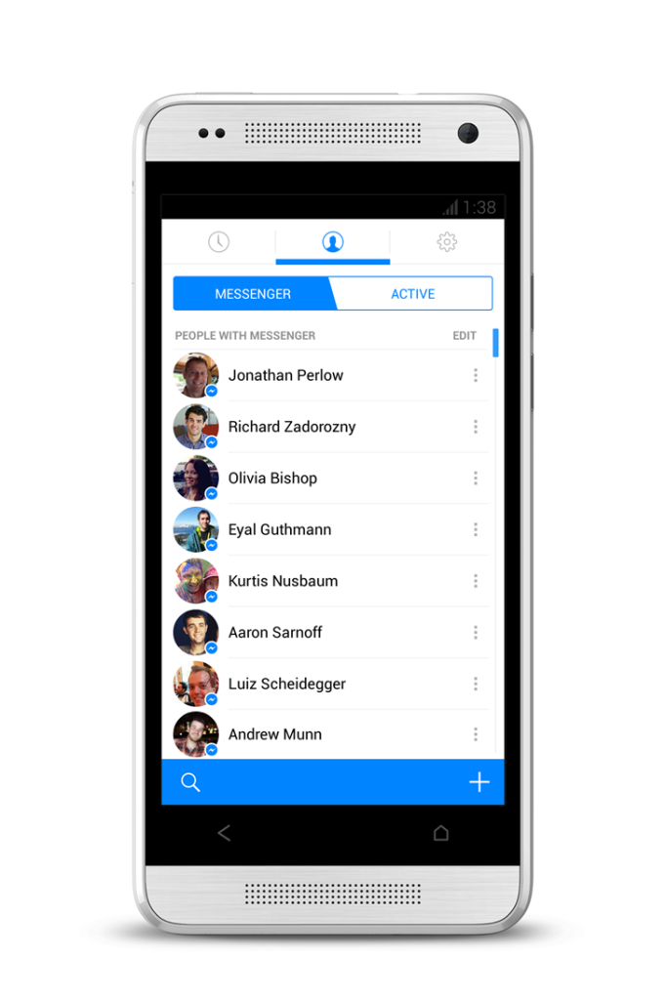
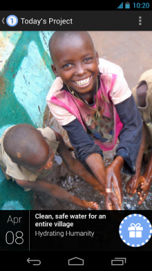
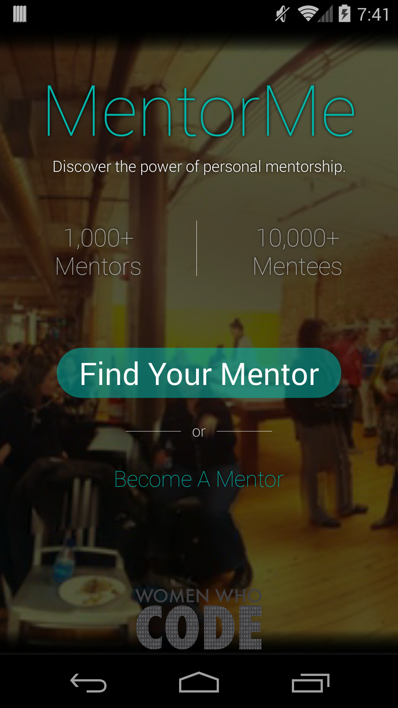

“In learning you will teach, and in teaching you will learn.”
- Phil Collins
MentorMe
Discover the power of personal mentorship.
May 2014
Introduction

Pieter de Jong

Nidhi Shah

Rong Hu
Our Story
- Mentorship app for Women Who Code
- Fast-track your career prospects
- Peer learning and coaching made simple
- Build an enduring professional network
Inspirations


Demo

Next Steps
- In-app messaging
- Meeting scheduler
- Log in with LinkedIn and GitHub
- Integration with Meetup